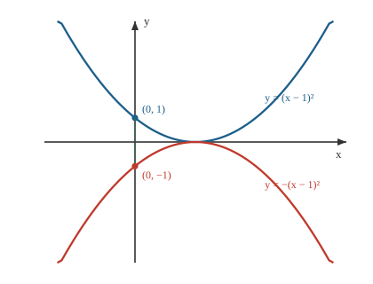
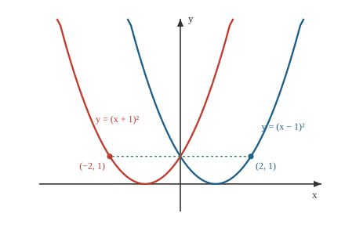

Based on Cambridge International AS & A Level Mathematics: Pure Mathematics 1 Coursebook (Sue Pemberton), Chapter 2, printed pp.55–57 (reflections in the axes, Key points 2.9–2.10, Worked example 2.13 style, Exercise 2F). Printed pages were read from P1.pdf (printed 55–57 = PDF 67–69). Own wording and new numbers. Teaching stops before 2.7 Stretches, which begins on printed p.57.
Key words: reflection in the x-axis, reflection in the y-axis
A reflection in the x-axis sends each point \((x,y)\) to \((x,-y)\). So, when the \(x\)-coordinates on two graphs are the same, the \(y\)-coordinates are negatives of one another. The graph of \(y=-f(x)\) is a reflection of the graph of \(y=f(x)\) in the \(x\)-axis.

A reflection in the y-axis sends each point \((x,y)\) to \((-x,y)\). The two graphs are at the same height when one has the opposite \(x\)-coordinate to the other. The graph of \(y=f(-x)\) is a reflection of the graph of \(y=f(x)\) in the \(y\)-axis. It is obtained by replacing every \(x\) in the formula by \(-x\).

Book: Worked example 2.13 style, printed p.56, tracking a turning point under each reflection. New numbers.
The graph of \(y=f(x)\) has a minimum turning point at \((4,-6)\). For each of the following graphs, state the coordinates of the turning point and whether it is a maximum or a minimum.
(a) \(y=-f(x)\) (b) \(y=f(-x)\)
Answer: (a) \((4, 6)\), maximum; (b) \((-4,-6)\), minimum
Book: Exercise 2F Q2 style, printed p.56, writing an equation after a reflection. New numbers.
The graph of \(y=2x^2-3x+1\) is reflected in the \(y\)-axis. Find the equation of the resulting graph.
Answer: \(y=2x^2+3x+1\)
The graph of \(y=f(x)\) has a turning point at \((3,-4)\). The graph of \(y=-f(x)\) has a turning point at \((3,k)\). What is the value of \(k\)?
Answer: \(4\)
The graph of \(y=f(x)\) has a turning point at \((5,-2)\). The graph of \(y=f(-x)\) has a turning point at \((k,-2)\). What is the value of \(k\)?
Answer: \(-5\)
The graph of \(y=x^2+7\) is reflected in the \(x\)-axis. What is the \(y\)-intercept of the resulting graph?
Answer: \(-7\)
Marks: M = method, A = accurate answer (depends on M), B = independent mark. Leave exact values exact.